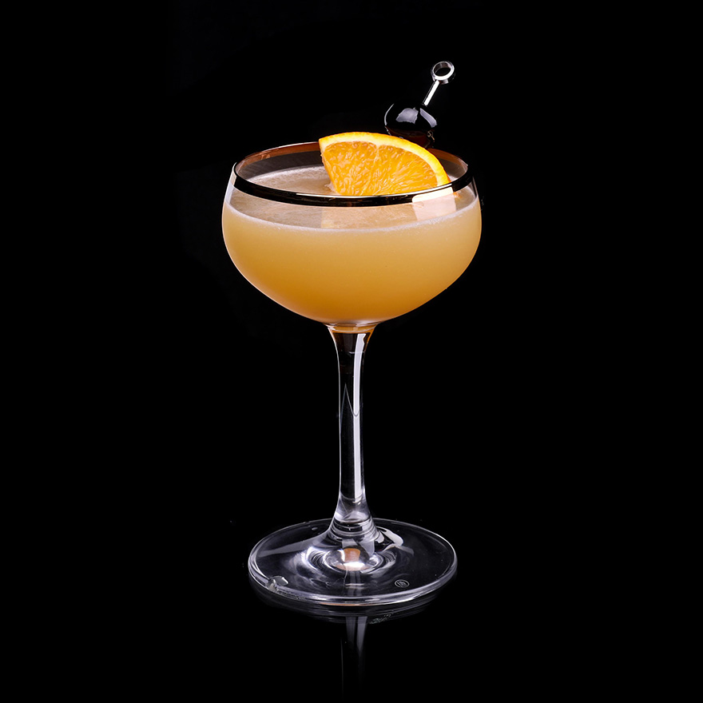

Ward 8 is an American cocktail that is typically prepared with a combination of rye whiskey, lemon juice, orange juice, and grenadine, although there are many recipes and numerous variations on the drink. The ingredients are shaken with ice, then strained into a chilled cocktail glass. If desired, the cocktail can be garnished with a maraschino cherry, although Ward 8 was originally decorated with a small paper Massachusetts flag. The cocktail was invented in 1898 in Boston at the Locke-Ober restaurant bar. It is believed that this drink was named after the city’s Ward 8, which helped in the election of Martin M.
Meal prep time : 5 minutes
Servings : 1